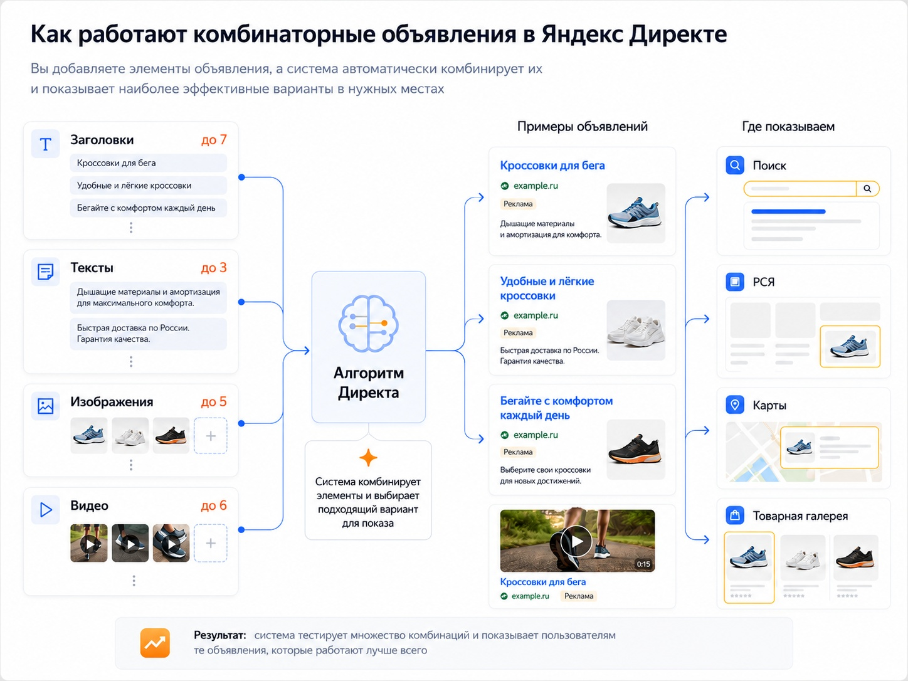

Блог о платном трафике
Комбинаторные объявления в Яндекс Директе: что это и как настроить
Комбинаторные объявления - новый основной формат объявлений в Единой перфоманс-кампании Яндекс Директа. Внутри одного объявления можно добавить несколько заголовков, текстов, изображений и видео, а Директ самостоятельно собирает из них разные комбинации и выбирает подходящий вариант для конкретного показа.
С лета 2026 года этот формат особенно важен: с 30 июня создавать новые текстово-графические объявления в ЕПК уже нельзя, а с 14 июля Яндекс начал автоматически обновлять существующие ТГО до комбинаторных.
По сути, логика изменилась. Раньше специалист создавал несколько отдельных объявлений и вручную менял в них тексты и креативы. Теперь основную часть вариантов можно собрать внутри одного объявления и передать выбор комбинаций алгоритму.
Что такое комбинаторное объявление
Комбинаторное объявление состоит не из одного фиксированного заголовка, текста и изображения, а из набора элементов.
В одно объявление сейчас можно добавить:
| Элемент | Максимальное количество |
|---|---|
| Заголовки | 7 |
| Тексты | 3 |
| Изображения | 5 |
| Видео | 6 |
| Неархивные комбинаторные объявления в группе | 3 |
| Объявления с учетом архивных | 10 |
Эти ограничения указаны в актуальной справке Яндекс Директа.
Например, можно создать семь заголовков с разными акцентами: цена, срок выполнения, ассортимент, доставка, гарантия, конкретная услуга и преимущество компании. К ним добавить три разных текста и несколько изображений.
Дальше Директ сам решает, какие элементы использовать при конкретном показе.
Это не означает, что пользователь обязательно увидит все добавленные элементы. Итоговый вид рекламы зависит в том числе от площадки и доступного рекламного формата.
Где показываются комбинаторные объявления
Комбинаторные объявления могут участвовать в показах:
- на Поиске Яндекса;
- в Рекламной сети Яндекса;
- в Товарной галерее;
- в Картах.
Если используются видео, они также могут участвовать в подходящих форматах видеорекламы в РСЯ.
Это одна из причин, по которой изображения и видео лучше готовить в разных пропорциях. Один горизонтальный креатив физически не подойдет для всех возможных мест размещения.
Как работают комбинаторные объявления

Схема достаточно простая.
Сначала рекламодатель передает Директу набор элементов:
заголовки + тексты + изображения + видео
Затем система формирует из них подходящие сочетания.
После начала показов алгоритмы оценивают варианты и стараются выбирать для конкретного показа наиболее подходящую комбинацию с учетом пользователя, запроса и площадки.
При этом я бы не воспринимал комбинаторное объявление как кнопку, которая сама напишет хорошую рекламу.
Алгоритм работает с тем материалом, который ему дали. Если семь заголовков отличаются друг от друга только перестановкой слов, большого пространства для оптимизации у системы не появляется.
Например, плохой набор:
- Ремонт квартир под ключ
- Ремонт квартир под ключ недорого
- Недорогой ремонт квартир под ключ
- Заказать ремонт квартир под ключ
Формулировки разные, но смысл практически один.
Полезнее разделить аргументы:
- Ремонт квартир с фиксированной сметой
- Начинаем работы после утверждения проекта
- Дизайн-проект и ремонт в одной компании
- Покажем выполненные объекты
- Гарантия на выполненные работы
- Ремонт квартиры поэтапно
- Рассчитаем стоимость до начала работ
Конкретные обещания, конечно, должны соответствовать реальному предложению компании и информации на посадочной странице.
Как настроить комбинаторное объявление в Яндекс Директе

Комбинаторный формат доступен в Единой перфоманс-кампании.
1. Создайте или откройте ЕПК
При создании объявления выберите тип «Комбинаторное».
Сейчас именно этот формат Яндекс рекомендует использовать для задач, которые раньше решались с помощью текстово-графических объявлений.
2. Укажите страницу перехода
Добавьте ссылку на страницу сайта, соответствующую рекламируемому предложению.
Если реклама посвящена конкретной услуге, лучше вести человека именно на эту услугу, а не автоматически отправлять весь трафик на главную страницу.
Объявление, запрос пользователя и посадочная страница должны логично продолжать друг друга.
3. Добавьте заголовки
Можно использовать до семи вариантов.
Максимальная длина заголовка - 56 символов.
Я бы использовал заголовки не для семи вариантов одного ключевого запроса, а для нескольких разных аргументов.
Например:
- Что именно продаем.
- Цена или условия оплаты.
- Срок.
- Конкретное преимущество.
- Гарантия или снижение риска.
- Вариант для отдельного сегмента аудитории.
- Дополнительная причина выбрать предложение.
Все заголовки при этом должны нормально сочетаться с каждым из добавленных текстов.
4. Добавьте тексты
В одном комбинаторном объявлении доступно до трех текстов. Максимальная длина каждого - 81 символ.
Текст лучше использовать для продолжения мысли, а не для буквального повторения заголовка.
Если заголовок сообщает о фиксированной стоимости, текст может раскрывать состав работ. Если заголовок говорит о доставке, текст может объяснять сроки или географию.
5. Загрузите изображения
Можно добавить до пяти изображений. Яндекс рекомендует использовать несколько вариантов и проверять их отображение в предпросмотре. Для изображений можно корректировать смарт-центры, чтобы при автоматическом кадрировании в кадре оставалась нужная часть объекта.
Я бы не загружал пять почти одинаковых фотографий.
Лучше дать системе действительно разные материалы:
- товар;
- товар в использовании;
- результат услуги;
- человек или объект;
- отдельный визуальный акцент на преимуществе.
Если формат позволяет это сделать без нарушения требований модерации.
6. Добавьте видео
Одно объявление может содержать до шести видео.
Видео особенно полезно для РСЯ, где объявление конкурирует за внимание человека с контентом самой площадки.
При наличии материалов имеет смысл подготовить горизонтальный, вертикальный и квадратный варианты, чтобы у системы было больше подходящих креативов для разных размещений.
7. Заполните дополнительные элементы
В объявлении также могут использоваться:
- быстрые ссылки;
- уточнения;
- контактная информация;
- цена;
- промоакция;
- другие доступные элементы.
Они могут отображаться в объявлении, но не относятся к тем элементам, которые система комбинирует между собой как заголовки, тексты и креативы.
Что произошло с обычными текстово-графическими объявлениями
Это особенно актуальный вопрос в 2026 году.
С 30 июня новые текстово-графические объявления в ЕПК создавать перестали. Существующие некоторое время продолжали работать и оставались доступными для редактирования.
С 14 июля началось их автоматическое обновление до комбинаторного формата. Номер объявления, его настройки и накопленная статистика при переводе сохраняются.
Есть отдельный нюанс с дополнительным заголовком.
В комбинаторных объявлениях отдельного дополнительного заголовка нет.
Если основной и дополнительный заголовки старого ТГО вместе с разделителем помещаются в 56 символов, при обновлении они могут быть объединены в один заголовок. Если лимит превышен, переносится основной заголовок.
Поэтому инструкции, в которых предлагают сейчас создавать новые ТГО с основным и дополнительным заголовком, для ЕПК уже устарели.
Комбинаторные объявления и текстово-графические: в чем разница
Основное отличие - в том, где происходит перебор вариантов.
Раньше специалист мог создать:
- объявление №1 с одним заголовком и изображением;
- объявление №2 с другим;
- объявление №3 с третьим.
В комбинаторном формате несколько вариантов находятся внутри одного объявления.
| Текстово-графическое объявление | Комбинаторное объявление |
|---|---|
| Фиксированный набор основных элементов | Несколько вариантов элементов |
| Для нового сочетания создавалось отдельное объявление | Сочетания формирует Директ |
| Больше ручной работы | Больше автоматизации |
| Есть дополнительный заголовок | Отдельного дополнительного заголовка нет |
| Новые ТГО в ЕПК больше не создаются | Текущий основной формат для этих задач |
Получается, что контроль постепенно смещается от ручного создания каждой конкретной связки к подготовке качественного набора исходных материалов.
Нужно ли заполнять все семь заголовков и остальные элементы
Яндекс рекомендует добавлять максимальное количество разнообразных элементов. Чем больше подходящих вариантов получает система, тем больше возможностей у нее сформировать объявления для разных пользователей и мест размещения.
Но слово «разнообразных» здесь важнее слова «максимальное».
Не нужно придумывать седьмой заголовок только ради заполненного поля.
Лучше пять содержательно разных вариантов, чем семь почти одинаковых.
Я обычно смотрю на это как на набор маркетинговых гипотез. Один заголовок отвечает на вопрос «что это», другой работает через стоимость, третий через скорость, четвертый через доверие, пятый через конкретную особенность продукта.
Тогда у алгоритма действительно появляется выбор.
Как оценивать эффективность комбинаторных объявлений
Главная ошибка - смотреть только на CTR.
Высокая кликабельность сама по себе еще не означает, что реклама приносит бизнесу хороший результат.
Для большинства проектов я в первую очередь смотрю на:
- количество целевых конверсий;
- фактический CPA;
- качество заявок;
- стоимость продажи, если ее можно связать с рекламой;
- расход;
- объем полученного трафика.
CPA в Яндекс Директе: что это и как считать стоимость конверсии
А уже потом разбираюсь, почему конкретный результат получился именно таким.
Для комбинаторных объявлений в Мастере отчетов есть группировка «Тип объявления». Кроме этого, результаты можно анализировать по отдельным элементам: заголовкам, текстам, изображениям и видео.
Это полезнее, чем просто увидеть средний результат объявления.
Например, если один заголовок стабильно участвует в большом количестве эффективных показов, его смысл можно использовать дальше. Если конкретный креатив получает трафик, но плохо работает по целевым действиям, его имеет смысл пересмотреть.
При загрузке изображений и видео Яндекс отдельно рекомендует давать файлам понятные названия. В отчетах это сильно упрощает анализ элементов.
Плюсы комбинаторных объявлений
Первый плюс - меньше ручной работы.
Не требуется создавать множество отдельных объявлений только ради проверки нескольких вариантов заголовка или изображения.
Второй - больше исходных данных для алгоритма.
В одном объекте можно передать разные рекламные сообщения и креативы, из которых система формирует варианты под конкретные показы.
Третий - адаптация к разным рекламным площадкам.
Несколько изображений и видео разных форматов позволяют использовать подходящие материалы там, где один универсальный баннер мог бы отображаться плохо.
Какие есть недостатки
За удобство автоматизации приходится отдавать системе часть ручного контроля.
Специалист уже не определяет заранее каждое конкретное сочетание заголовка, текста и изображения.
Кроме того, изменение одного элемента может влиять сразу на множество вариантов объявления. Поэтому я бы не вносил постоянные хаотичные правки только потому, что за последние два дня какой-то заголовок получил меньше конверсий.
Нужен достаточный объем статистики и понимание конечной цели рекламы.
Еще одна потенциальная проблема - слабые исходные материалы. Автоматическая комбинация не исправит плохой оффер, неактуальную цену или неудачное изображение. Она только будет комбинировать то, что загрузил рекламодатель.
Как я бы собирал комбинаторное объявление
Мой рабочий принцип простой: сначала определить смыслы, потом писать формулировки.
Допустим, рекламируем услугу.
Я сначала выписываю:
- Что конкретно человек получает.
- Сколько это стоит или как формируется цена.
- Срок.
- Что снижает риск клиента.
- Чем предложение отличается от конкурентов.
- Для кого оно подходит.
- Какое следующее действие нужно сделать.
После этого из этих смыслов собираются заголовки и тексты.
С изображениями та же логика. Пять кадров одной и той же фотографии дают меньше разнообразия, чем несколько действительно разных способов показать продукт или результат.
Главное правило: любой заголовок должен нормально сочетаться с любым текстом. Иначе Директ может собрать грамматически правильное, но по смыслу странное объявление.
Нужно ли переходить на комбинаторные объявления
Для новых объявлений в ЕПК выбора фактически уже нет. Формат заменяет классические текстово-графические объявления в тех задачах, для которых они раньше использовались.
Поэтому вопрос сейчас скорее не в том, использовать их или нет, а в том, как правильно подготовить исходные элементы.
Я бы не пытался бороться с автоматизацией Директа. Алгоритмам нужно дать достаточно вариантов для выбора, но эти варианты должны быть подготовлены специалистом осмысленно.
Автоматизация хорошо перебирает комбинации. Придумать за бизнес сильное предложение она не может.
Частые вопросы
Что такое комбинаторное объявление в Яндекс Директе?
Это тип объявления в Единой перфоманс-кампании, куда можно добавить несколько заголовков, текстов, изображений и видео. Директ формирует из них разные варианты и выбирает подходящее сочетание для показа.
Сколько заголовков можно добавить?
До семи заголовков в одно комбинаторное объявление. Каждый должен укладываться в установленный Яндексом лимит по длине.
Сколько текстов можно использовать?
До трех вариантов текста.
Сколько комбинаторных объявлений можно создать в одной группе?
До трех неархивных. Вместе с архивными в группе может находиться до десяти комбинаторных объявлений.
Можно ли сейчас создать обычное текстово-графическое объявление в ЕПК?
Новое ТГО в ЕПК создать уже нельзя. С 30 июня 2026 года они доступны только в рамках перехода старых объявлений, а с 14 июля Яндекс начал автоматически обновлять существующие ТГО до комбинаторных.
Как узнать, какой заголовок или креатив работает лучше?
В Мастере отчетов можно использовать группировки по заголовкам, текстам, изображениям и видео и сравнивать результаты отдельных элементов.
Комбинаторные объявления хорошо отражают общее направление развития Яндекс Директа: все больше решений принимают алгоритмы, а задача специалиста смещается в сторону качественных исходных данных, аналитики и контроля конечного результата. Сам формат экономит время на ручной перебор объявлений, но эффективность по-прежнему зависит от предложения, посадочной страницы, аналитики и качества рекламных материалов.